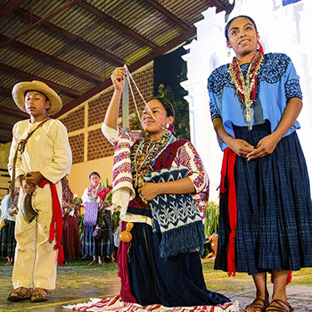

Los pueblos pocomchi'es
Los pueblos poqomchi'es
Está comprendido por los poblados de San Cristóbal Verapaz, Santa Cruz, Tactic, Tamahú y parte de Tucurú, en Alta Verapaz.
Hay población poqomchi' en Purulhá, Baja Verapaz y una parte de San Miguel Uspantán en el departamento de Quiché. Actualmente hay aproximadamente 94,714 hablantes.
pocomchi'es (etnia)
Poqomchí es una etnia de origen maya de Guatemala. Su lengua indígena es también llamada Poqomchí, y se relaciona con las lenguas quiché y pocomam.
El mundo q'eqchi' de la Verapaz

El monolingüismo es la principal característica de sus pobladores, que durante años lograron que los foráneos utilizaran el q'eqchi' como una lengua franca. Los q'eqchi'es de hoy conservan sus prácticas y creencias mágicas. Las expresiones como las danzas de Venados, de Cortés o de los Viejitos, destacan en muchas de las poblaciones. La marimba de resonadores de bambú, los conjuntos de chirimía y tambor o con pito; pero sobre todo el conjunto de arpa, violín y guitarra, nos recuerda el proceso de conquista y de adopción instrumental moro-europeo. La culinaria q'eqchi' ha logrado un espacio en el escenario nacional. La sopa de kaq'ik, elaborada con chile rojo y achiote que se acompaña de carne de chompipe y tamalitos de maíz, es codiciada en el área y fuera de su esfera.S